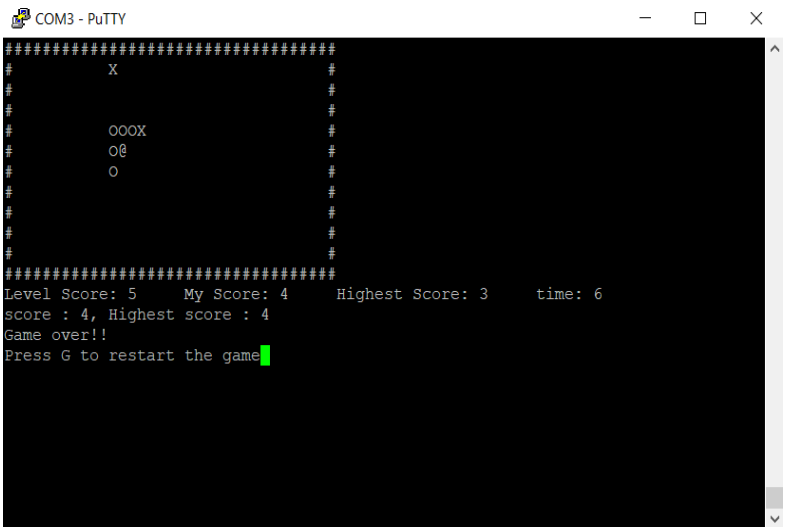

About Me
Hello! My name is Mohamed Ali and I am a Software Engineer student at Faculty of engineering Ain Shams University. I am passionate about using technology to solve real-world problems and I am always looking for opportunities to learn and grow as a developer. I am currently seeking an internship or part-time job where I can apply my skills and gain practical experience in the field.
I have experience in a range of programming languages, including Java, Python, and C++, and I have completed coursework in areas such as data structures, algorithms, and software design. In my free time, I enjoy participating in hackathons and contributing to open-source projects on GitHub.
I am excited to apply for an internship and be a part of a team where I can continue to learn and make a meaningful contribution. Thank you for considering me for this opportunity.
Additionally, I have also taken courses and pursued independent studies in Machine Learning and Artificial Intelligence. I am familiar with popular frameworks such as TensorFlow, PyTorch, and scikit-learn and have hands-on experience building and training models for image classification, sentiment analysis, and recommendation systems. I am eager to apply these skills to real-world problems and continue to grow my understanding of this field.
Overall, I am confident that my technical skills, passion for technology, and drive to learn and grow make me a strong fit for an internship opportunity. I look forward to the opportunity to contribute my skills and gain valuable experience while working with a team of talented professionals.
Thank you for your consideration.
Projects
1- TINY Language Compiler
The Tiny Compiler app is a powerful tool for compiling code written in the Tiny language. It offers a range of features, including syntax highlighting, error checking, and code completion, to help you write and debug your code more efficiently. To create an AST, the tool first needs to scan the code and identify the different tokens that make up the program, such as keywords, variables, and operators. It can then use this information to build a tree-like structure that represents the code's syntax and structure.

Features
- Syntax highlighting
- Error checking
- Error highlighting
- Tokenization
- AST generation
2- XML-Manager Program
XML (Extensible Markup Language) is one of the most famous formats for storing and sharing information among different devices. Some text editors such as Sublime Text are able to parse such files and do some basic operations. In our Application, We worked on developing a GUI (Graphical User Interface) based program to parse and visualize an XML file and Do Some operation on it such (Detect and Correct Syntax Error , Compress the file , Decompress it , Format it and Convert it to JSON Format.

Features
- Error checking
- Error Fixing
- Compression/Decompression Xml files
- Minifying
- Convert Xml to Json
- Format Xml
- Draw Network graph
3- Simple Perception Stack for Self Driving Cars
The Simple Perception Stack for Self-Driving Cars project is a fundamental building block for creating self-driving cars. By focusing on video streams from cameras, the project aims to provide a complete perception system that can accurately detect lane lines and other vehicles on the road. The project is split into two phases, with the first phase focused on lane line detection and the second phase focused on cars detection. The end result will be a system that provides a robust and reliable perception solution for self-driving cars, enabling them to make safe and informed decisions on the road.

Features
- Lane line detection
- Determine radius of curvature
- Car detection
- Car tracking
4- Snake Game
The Snake game is a challenging project that showcases the developer's skills in game development and programming. By successfully implementing the game in the serial terminal, it helps in demonstrate the ability to handle user input, create an engaging user experience, and effectively use ASCII characters for game representation and pseudo-random number generation for power-up implementation. This project is a valuable addition, highlighting the my creativity, critical thinking, and dedication to the field of game development.
Skills demonstrated in this project include: Task scheduling and concurrency management in game development. Implementing ISRs and user input handling. Use of ASCII characters for game representation. Pseudo-random number generation for power-up implementation. Debugging and testing of complex systems. Documentation and code commenting skills. Data structures and algorithms for game development.
Features
- Snake movement
- Snake growth
- Apple generation
- Apple eating
- Apple score
- Apple power-up
- Wall collision
- Snake collision
- obstcale collision
- Game over
Contact
- +20 1278266574
- mohamedali8394@gmail.com
- MohamedBakr_77
- GitHub